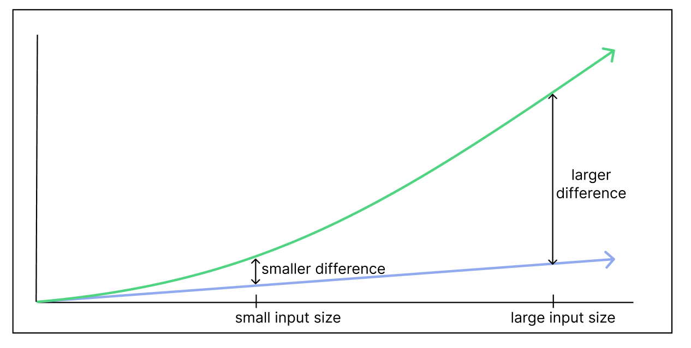
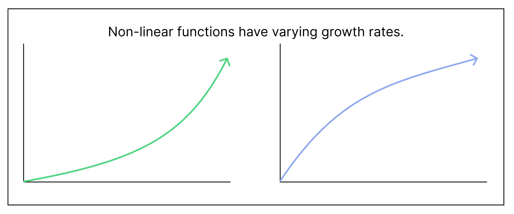

Big O notation is a mathemetical notation that describes the upper bound of growth for a specific function. If we say that a function f(x) is O(g(x)) (spoken as "f(x) is O of g(x)"), that simply means that the function f(x) grows slower or at an equal rate as g(x), for sufficiently large values of x. (In other words, as x approaches infinity). This encompasses both linear and nonlinear growth rates.
Since Big O is used as a measure of time or space efficiency, it is important to consider large input sizes. Differences between outputs
will be less pronounced with small input sizes, but as input scales, so will the differences. For example, 2x and x only have a difference of 1 at x=1, but have
a difference of 100 at x=100.

To save time and space, we want to pick functions that will have relatively less growth as x approaches infinity.
Additionally, non-linear functions (as shown above) will have non-constant rate of change, which is means their derivatives vary with input size, x.

Big O also generally focuses on comparing the dominant terms of functions rather than entire functions. (The term with the largest power or degree is called
the dominant term.) In a polynomial equations such as 3x5+x2+4x, for example, the highest power term (in this case 3x5) will eventually dominate the behavior of the function, since at large
values of x, the growth of 3x5 will be so large that it will make the growth of smaller powered terms relatively negligible.
For these reasons, Big O focuses on comparing the growth behavior of the dominant term of functions as x approaches infinity.
The definition of Big O states that:
A function f(x) is O(g(x)) if and only if
There exists some constants C and n for which f(x) ≤ C * g(x),
Whenever x ≥ n, and C is a constant.
Restated: f(x) is less than or equal to g(x) times a constant for all values of x. This guarantees that f(x) is never able to
exceed the scaled version of g(x), past a certain value of x.
Note that although big O focuses on dominant term behavior, we consider the entire expression when using the formal definition, for accuracy.
Consider the following graph, where the black line is f(x) and the blue line is g(x). It is clear that the growth rate of the g(x) quickly exceeds f(x), but for a short period in the beginning of the graph, f(x) has greater values than g(x).
Recall that big O notation is concerned with the behavior of functions as input size increases. By choosing a constant n, we are essentially setting it as our start point for comparison, and not considering behavior before that point.
Consider the following, where the red function is f(x) and black is g(x). The two functions shown above both have a slope of 0 for all values of x, so they grow at equal rates as x approaches infinity. This means that they should be big O of each other (This is also called big Theta. More on that later.)
It can be said that g(x) ≤ f(x) for all x, but the inverse cannot be said. However, if we incorportate a constant C that scales f(x), then g(x) ≤ C * f(x), and it is shown that the functions are O of each other.
In summary, the constant n determines the point at which we begin comparing the two functions, and the constant C ensures that we are purely comparing growth rates rather than actual output values.